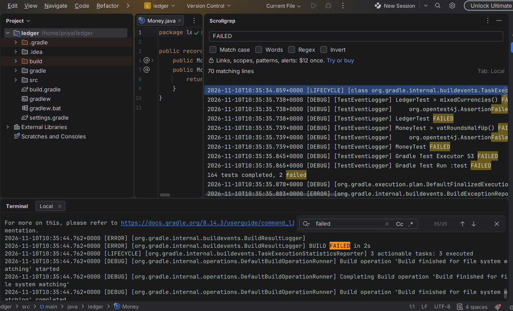
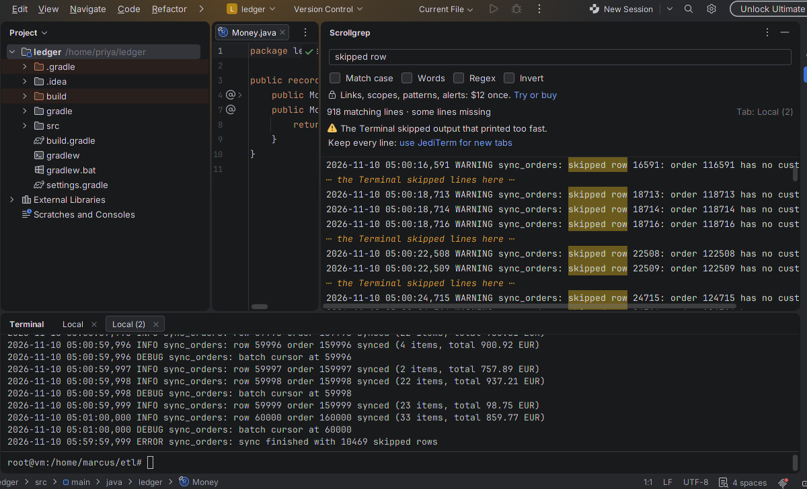
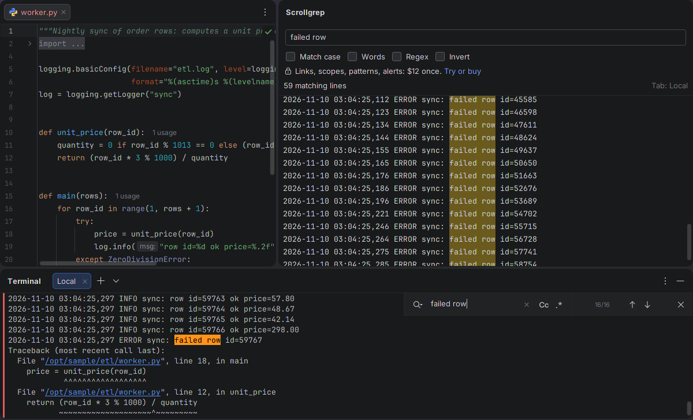
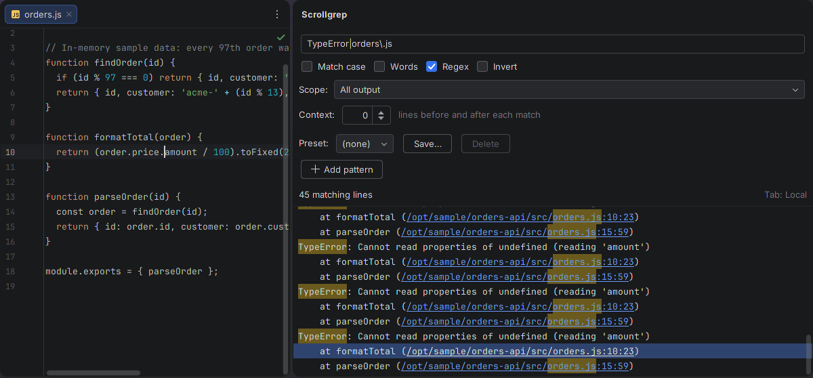
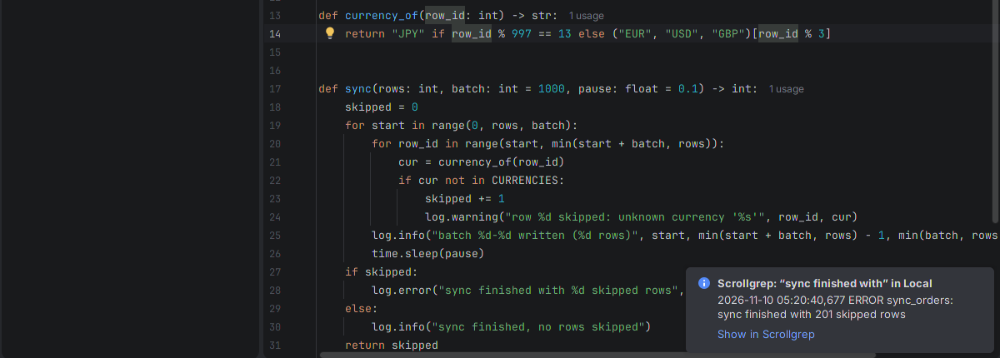

Watch it work
cmd | grep FAIL works if you know the pattern before you run. Scrollgrep does not touch the Run and Debug consoles.
In the IDE, for real


cat of a 97,317-line log at full speed. The 2026.3 Terminal's Ghostty emulator skipped most of it; Scrollgrep kept the 918 matching lines that arrived (the Terminal itself held 859) and says where lines are missing. After one click on "use JediTerm for new tabs", the same cat in a new tab: all 10,470.
tail -f on a 60,000-row sync log. Scrollgrep lists 59 failed rows, as many as grep -c counts in the file; the Terminal's own search finds 16.

formatTotal frame clicked, orders.js open at line 10, column 23.

Measured
200,000 lines at full speed in a real bash tab, five runs: 2,061 matching lines each time, the same as grep -c; matches shown a median of 0.52 to 0.66 s after printing; the UI thread never blocked longer than 65.7 ms while they were added (IntelliJ IDEA 2025.3, headless, Linux, 4 CPUs).
IntelliJ IDEA 2026.3 (with its windows, Linux), each command in a new tab with the filter set first: five Gradle test runs, 70 of 70 lines with "failed"; tail -f of a sync log written at about 4,000 lines a second, 10,470 of 10,470. On the Ghostty emulator, output printed at full speed is partly skipped by the Terminal: cat of that log kept 988 of 10,470, of the Gradle log 35 of 70, the 200,000-line generator 85 of 2,062, each marked "some lines missing". In new tabs on JediTerm: 10,470, 70 and 2,062 of 10,470, 70 and 2,062.
Known limits
- Results show in Scrollgrep's own panel, as plain text; the terminal itself hides nothing.
- IDE 2025.3 or later with the Reworked terminal engine (the default). No SSH sessions, no vim, less or htop.
- Matches outlast the Terminal's history for output that reached the Terminal while the panel showed the tab (up to 32 MB and 200,000 lines per tab).
- IDE 2026.3 starts Terminal tabs on the Ghostty emulator, which skips output that prints faster than it shows it; no plugin can read those lines. Scrollgrep marks where (not how many) and offers the JediTerm emulator for new tabs, which keeps every line.
- Tested on Linux in IntelliJ IDEA and PyCharm 2025.3 and 2026.3. Untested: WebStorm, GoLand and the other JetBrains IDEs, Windows, macOS, PowerShell, Remote Development, and a real Marketplace trial or purchase.
- The IDE's licence dialog says "Subscription"; Scrollgrep's licence is perpetual (you pay once). A plugin installed from the zip makes the IDE say it "cannot update" it; that is expected.
Details
- Sold through JetBrains Marketplace as a perpetual licence: every update included.
- Keeps a copy of Terminal output in memory, within the limits above; no network calls, no telemetry (privacy).
Screenshots: IntelliJ IDEA 2025.3 on a jsoup clone (MIT) with one assertion changed, and IntelliJ IDEA and PyCharm 2026.3 on a small Gradle project and a Python sync job, as each caption says. IntelliJ IDEA is a trademark of JetBrains s.r.o.; Scrollgrep is not affiliated with JetBrains.